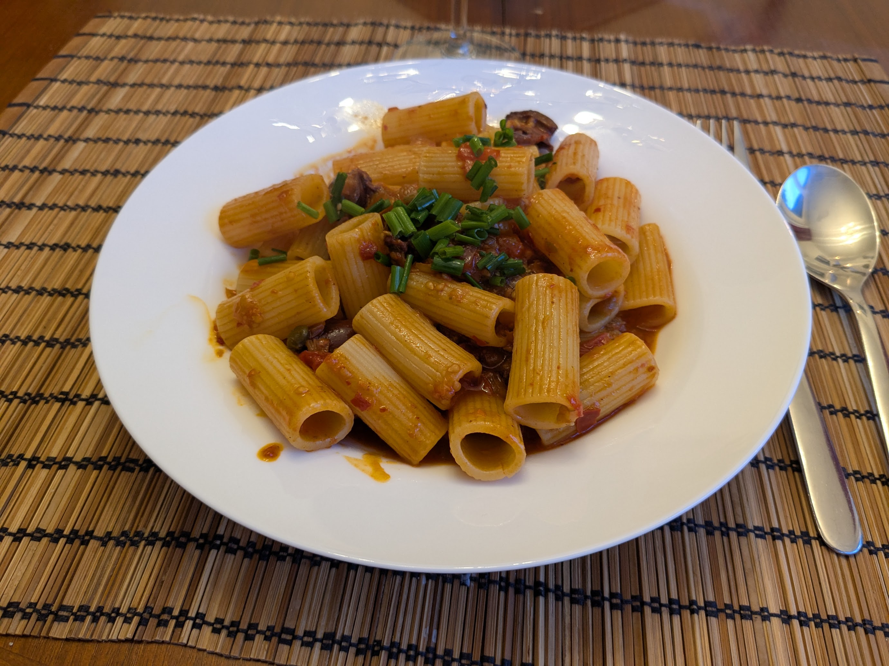

Pâtes alla Norma

Ici parsemé de jaunes d'œufs séchés au sel
Pour quatre personnes :
- Une grosse boîte de tomates concassées (800g)
- Deux aubergines
- Trois gousses d'ail
- Deux petits piments séchés
- Une bonne cuillère à soupe de câpres
- Un bouquet de basilic
- Une cuillère à soupe de vinaigre
- Une cuillère à café d'origan séché
- (Facultatif) Du fromage râpé
- Sel, poivre, huile d'olive
- 400-500g de pâtes, par exemple des spaghetti ou des macaroni
- Couper les aubergines en morceaux d'environ 2 cm d'épaisseur. Les mettre dans une passoire avec du gros sel pour les faire suer une vingtaine de minutes.
- Pendant ce temps, éplucher et émincer l'ail, couper le basilic en lamelles, enlever les pépins des piments séchés et les couper en morceaux.
- Rincer les aubergines et les laisser sécher, ou bien les passer dans un peu de papier absorbant. Les mélanger dans un saladier avec l'origan, le piment, et un peu de sel, poivre et d'huile d'olive.
- Faire revenir les aubergines dans de l'huile d'olive, à feu fort, pendant environ 8 minutes de chaque côté. Les couper en deux ou quatre en fonction de leur taille (il faut que ça fasse des assez gros morceaux).
- Ajouter l'ail, la moitié du basilic et les câpres, faire cuire 2 minutes de plus.
- Ajouter le vinaigre et les tomates (avec leur jus), attendre que ça frémisse, et faire cuire à feu doux pendant une vingtaine de minutes.
- Pendant ce temps, faire cuire les pâtes. On peut rajouter un peu d'eau de cuisson des pâtes dans la sauce si on veut.
- Tout mélanger, ajouter le reste du basilic et du fromage râpé, servir chaud.